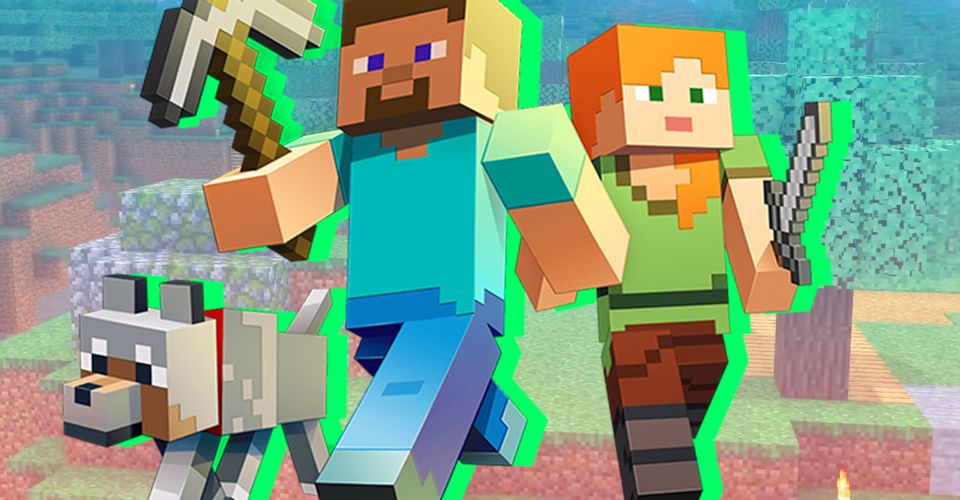

Some sample text about the home page: Minecraft blocks and items catalogue Here you will find information about the most desirable items, blocks, and mobs in the most recent version of Java Minecraft. Along with information of the items, blocks, and mobs themselves, we also provide a tutorial on how to farm the desired item, block, or mob. With the newest update: Caves and Cliffs, the best way to obtain diamonds is to find a nice big cave and search around the appropriate y-level Desirable items in Minecraft include diamonds, emeralds, netherite, gold, experience points, gunpowder, paper, iron, and much much more. If there’s something you want to get in Minecraft, there’s probably a way to farm it. With all of the updates coming out, it can be pretty hard to keep up with all of the new items, blocks, and mobs coming out. Here we will talk about what’s new, what’s good about it, what’s bad about it, and just what it is in general. We plan to keep this updated from update to update and would like to have a history of the past updates to keep track of when certain things were released or when certain farms became obsolete or stopped working. New farms will be posted along with the updates.